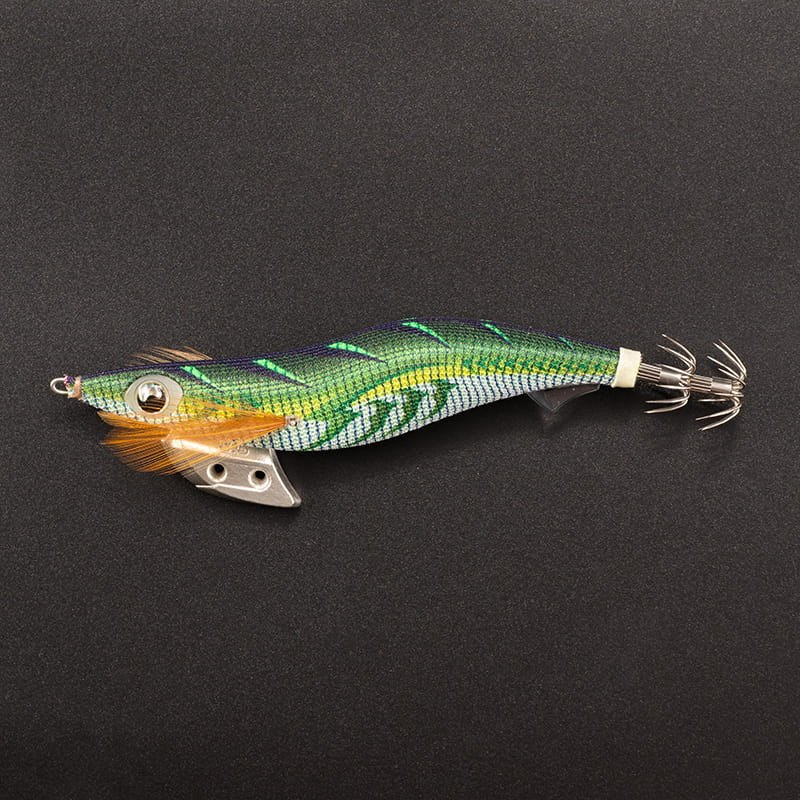
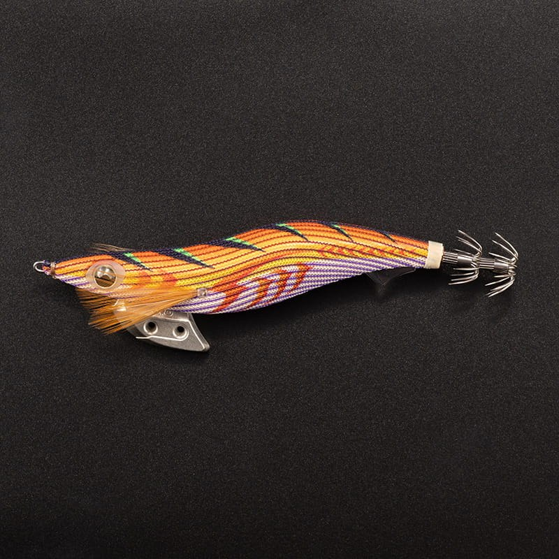
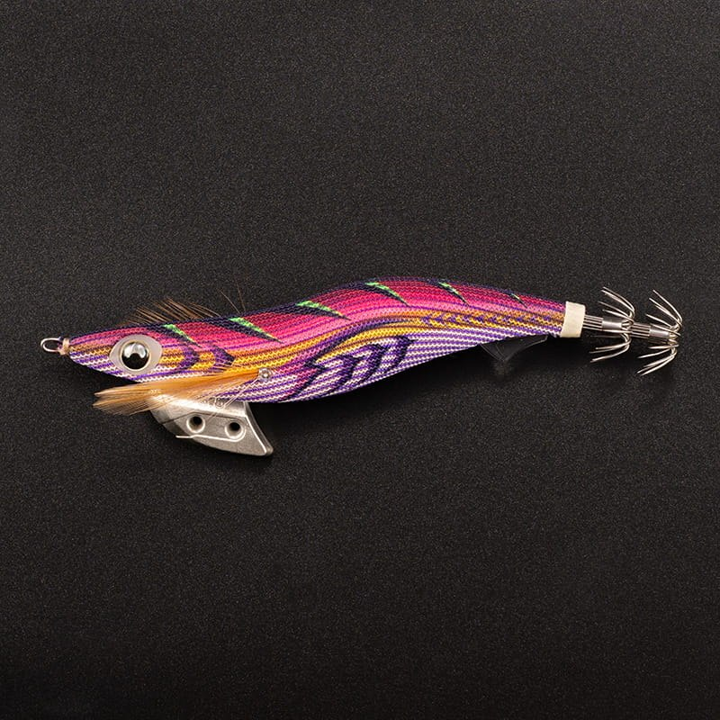
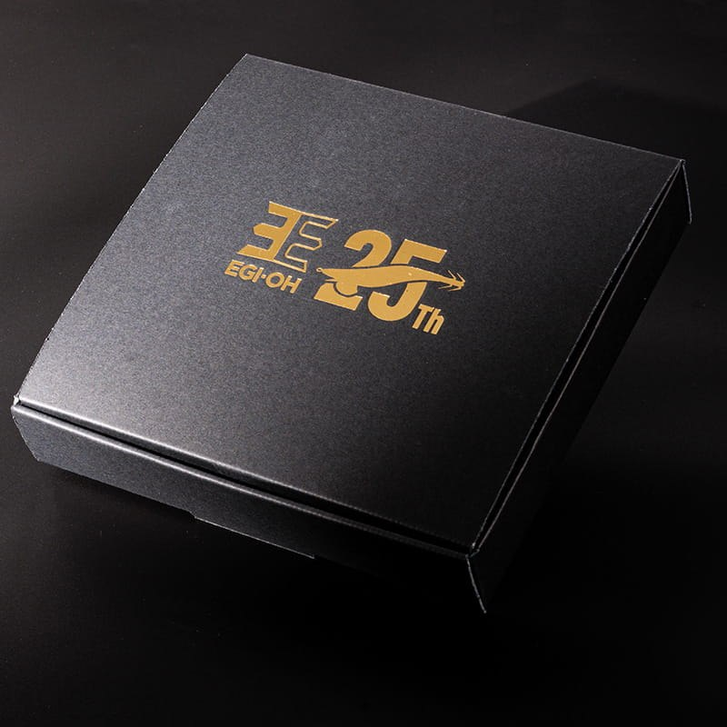

エギ王K 3.5 トラディショナルエディション
（エギ王 K 3.5 TRADITIONAL EDITION）
エギ王K 3.5 トラディショナルエディション（エギ王 K 3.5 TRADITIONAL EDITION）はYAMASHITA（ヤマシタ）のエギ（エギ王25周年記念モデル）です。
色と光が呼び覚ます、エギングのルーツ。エギ王25周年を記念した、特別なアニバーサリーモデルです。
2001年の誕生から25年。進化を重ねてきた「エギ王K」に、エギングの原点である古き良き“縞布”の記憶を宿したモデルで、ヤマシタのオンラインストア限定の記念エディションとして登場しました。

画像出典:ヤマシタ公式オンラインストア
スペック
- メーカー
- YAMASHITA（ヤマシタ）
- ベース
- エギ王K（3.5号）
- サイズ
- 3.5号
- セット内容
- 翡翠グリッド・極彩オレンジ・宵霞パープルの3本
- 布
- UV縞（翡翠グリッド）／紫縞（極彩オレンジ・宵霞パープル）
- パッケージ
- 25周年の限定ロゴを金箔押しした黒紙箱
- 販売
- YAMASHITA Maria ONLINE STORE 限定・数量限定（初回は抽選販売）
- 価格
- 5,720円（税込・3本セット）
▼今すぐチェック


エギ王K 3.5 トラディショナルエディションの特徴
漁師たちが好んだ「縞布」を、現代の技術で再定義
-
原点（ルーツ）の再発見
かつて漁師たちは、着物の端材の「縞模様」を好んでエギに巻いていた。海中で生まれる「縦と横の残像」と「強烈なコントラスト」がイカを狂わせることを、経験で知っていたから。その縞布の力を、「紫縞」と「UV縞」としてよみがえらせた。
-
背を飾る伝統の「杉柄」
エギの背に連なるV字の紋様「杉柄（すぎがら）」。イカが敏感に感じ取る明暗のコントラストを生む、先人の知恵でもある。縞布をまとったボディの背中を、この杉柄が引き締める。
-
アニバーサリーにふさわしいパッケージ
25周年の限定ロゴを金箔押しした、シックな黒紙箱。内装は専用のウレタンフォームで、箱を開けると3本の「縞」が浮かび上がるコレクターズディスプレイ仕様。
エギ王K 3.5 トラディショナルエディションの販売スケジュール
初回は抽選販売です（数量限定・在庫限りで販売終了）。
① 抽選の応募受付：2026年10月30日（金）12:00〜11月2日（月）23:59
② 11月5日（木）12:00以降、当選した人にメールで購入手続きの案内
③ 当選した人は、11月9日（月）11:59までに購入手続き
※落選のメールは届きません。キャンセルなどがあった場合は繰り上げ抽選、在庫が残った場合は予告なく先着順の販売に切り替わることがあります。転売目的の購入は断られています。
エギ王K 3.5 トラディショナルエディションの使い方と3色の使い分け
ベースは、タフコンディションや低活性のイカを攻略するエギ王K。使い方は通常のエギ王K 3.5号と同じで、シャクってフォールで抱かせます。
3色は、濁り潮の万能カラー（翡翠グリッド）、マヅメや濁りのハイアピール（極彩オレンジ）、夜・澄み潮・深場の強シルエット（宵霞パープル）と、状況ごとに使い分けられる組み合わせです。
ワンポイント
記念モデルとして飾っておくのはもちろん、実釣でも使える仕様です。通常のエギ王Kのサイズや沈下速度は、エギ王Kの記事を参考にしてください。
3色のカラーとパッケージ
セットの3色と、25周年の特別パッケージです（画像は公式オンラインストアより）。

翡翠（ひすい）グリッドグリーンボディ×UV縞布。UVの縦縞と濃緑の横縞が格子状に交差。濁り潮で潮なじみとアピールを両立する万能カラー。

極彩（ごくさい）オレンジ金ボディ×紫縞布。原点の杉柄と王道の「オレンジ×金テープ」。マヅメや濁り潮で遠くのイカを引き寄せるハイアピール。

宵霞（よいがすみ）パープル赤ボディ×紫縞布。赤テープが水中で黒く浮かぶ強いシルエット。夜・澄み潮・深場で存在感を出す。

25周年スペシャルパッケージ限定ロゴを金箔押しした黒紙箱。
画像出典:ヤマシタ公式オンラインストア
エギ王K 3.5 トラディショナルエディションとあわせてチェックしたいアイテム
-
 エギ王K
ヤマシタ
詳細はこちら＞
エギ王K
ヤマシタ
詳細はこちら＞
このモデルのベースになった定番エギ。
-
 エギ王K ディープ
ヤマシタ
詳細はこちら＞
エギ王K ディープ
ヤマシタ
詳細はこちら＞
深場を攻めるエギ王K。
-
 エギ王LIVE
ヤマシタ
詳細はこちら＞
エギ王LIVE
ヤマシタ
詳細はこちら＞
エギ王シリーズのダートタイプ。